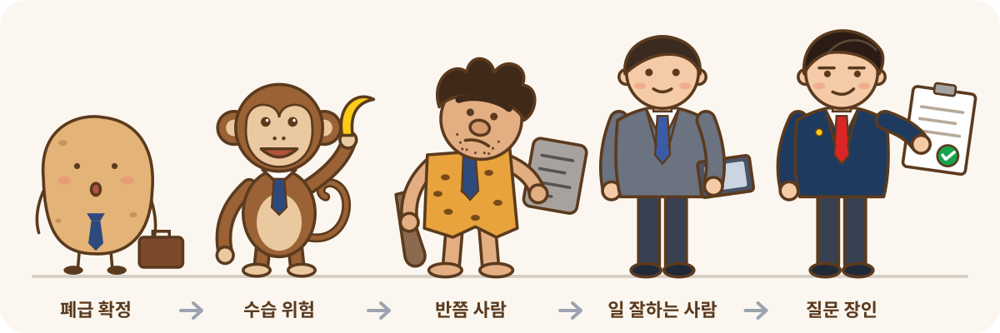

직장인 질문 습관 진단
질문 폐급 테스트
당신의 질문, 상사에게는 어떻게 보일까요?
12개 상황에서 내가 실제로 할 행동을 골라주세요.

Q1
나의 등급
/ 100점
5축 진단
개선 템플릿
이런 질문을 함
이렇게 바꾸면 됨
직장인 질문 습관 진단
당신의 질문, 상사에게는 어떻게 보일까요?
12개 상황에서 내가 실제로 할 행동을 골라주세요.

나의 등급
/ 100점